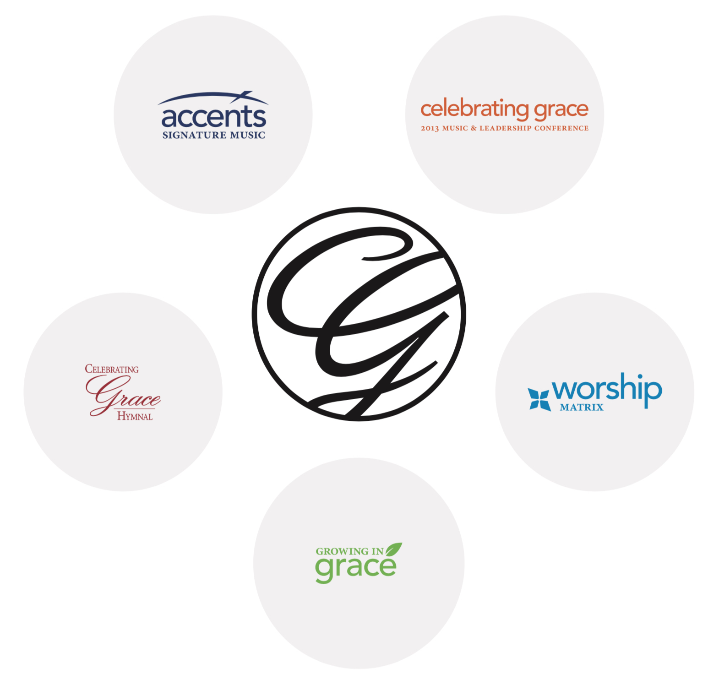
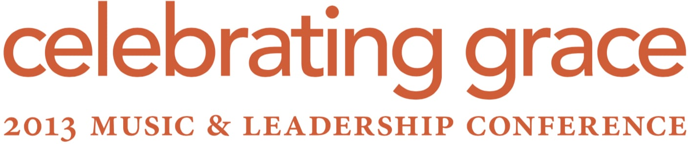
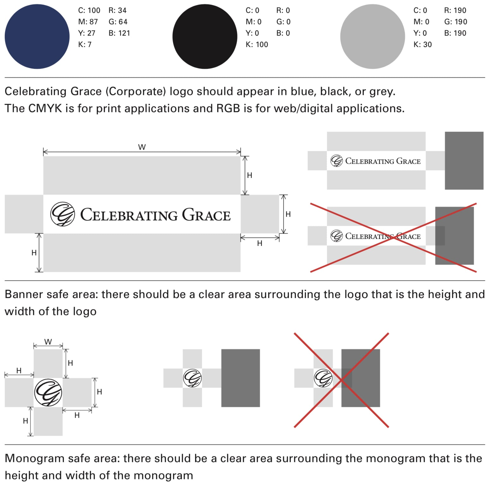
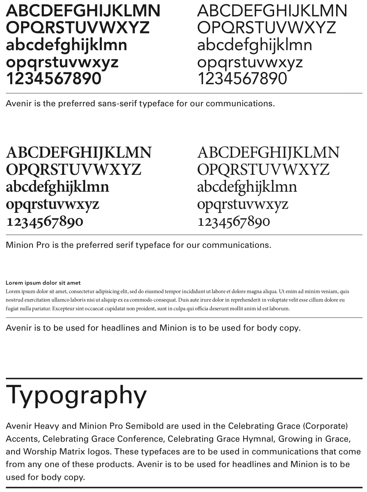

Portfolio ➪ Celebrating Grace
What I did
- Project Management
- Product Owner
- Website Design
- Branding
- Strategic Planning
- Ad Campaign Direction
Achievements
- 100% budgetary and deliverable milestones across a six-year contract.
- Increased PPC ad engagement by +239% ad clicks, +200% conversions, and +104% impressions in the first 2 months.
- Communicated to great effect across 4 companies and a dozen departments.
Client Story
Celebrating Grace had discovered that its brand assets, communications, and tech stack were disorganized.
They commissioned me to unify their messaging and technology solutions from top to bottom.
PROJECT MANAGEMENT
I recruited and led a team of remote developers over two years, to create a cutting edge Magento e-commerce website. I provided the visual design, while leading the development and marketing teams. I led them in joining the Celebrating Grace warehouse system with the website's backend and frontend, integrating automatic inventory control, and eliminating all manual data input. In addition, I procured product photography and wrote copy for A/B landing pages.
BRAND UNIFICATION
With tens of thousands of books in print, and 6 product lines in 6 different visual languages, the first step was to create a disciplined design system to draw the brands together. (Note: the Hymnal brand was left untouched. When a new edition is printed, Celebrating Grace plans to have it join the new design system.)
CORPORATE BRANDING
Customers were buying product lines, but weren’t didn't know they were created by Celebrating Grace.
First, my team created a recognizable corporate brand, to appear with each product, and a design system flowing from that.
Product Branding
Next, we redesigned the product brands. We preserved their original elements, yet updated and refined the designs, to join them into a single, unified system.
Each product remained instantly recognizable to long time customers, and told a cohesive story to new customers.
Brand Guide
A design system is only as strong as its implementation.
To help Celebrating Grace staff deliver a powerful, consistent voice across dozens of media, we created a comprehensive Brand Guide, usable by any staff member across the organization.
Ad Campaign Direction
I wrote hundreds of ads for a segmented PPC campaign, using a non-profit grant from Google, to drive an exponential increase in traffic, sales, and lead acquisition.
Strategic Planning
I led the Celebrating Grace CEO and board in developing their Mission, Vision, and Values statements, coupled with a practical and instantly actionable marketing strategy.




